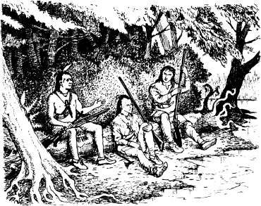
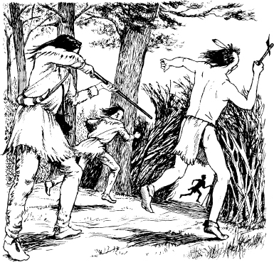
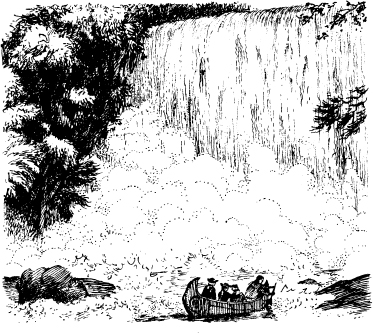
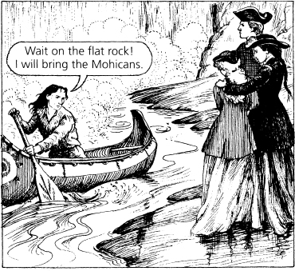

2
Lạc trong rừng
Listen to Part 1:
Cách Fort Edward vài dặm về phía tây, có ba người đàn ông ngồi cạnh một con sông. Hai người trong số họ là người da đỏ. Người đàn ông còn lại là một người da trắng. Chingachgook và con trai ông, Uncas, là người Mohican. Người đàn ông da trắng là một trinh sát được gọi là Mắt Diều Hâu. Mắt Diều Hâu có một khẩu súng săn dài.
Ba người đàn ông đang nói chuyện.
Chingachgook nói: "Bộ lạc của tôi là bộ lạc người da đỏ lâu đời nhất. Tôi mang trong mình dòng máu của những tù trưởng Mohican. Nhiều mùa hè trước, bộ lạc của tôi đã đến đây trên vùng đất của người Delawares.

Mắt Diều Hâu hỏi: "Người Mohican bây giờ ở đâu?"
Chingachgook nói: "Những bông hoa của những mùa hè đó ở đâu? Không còn nữa. Tất cả đã chết. Sau khi tôi mất, Uncas sẽ là người Mohican cuối cùng.
Đột nhiên, họ nghe thấy tiếng động. Họ nhanh chóng quay lại. Mắt Diều Hâu giơ súng lên. Ông ta nói: "Ai đó?"
Duncan Heyward cưỡi ra khỏi rừng. Cora và Alice đi theo anh ta.
Duncan nói: "Tôi là một sĩ quan người Anh. Chúng tôi đến từ Fort Edward. Còn bao xa đến Fort William Henry?"
Mắt Diều Hâu cười. Ông ta nói: "Fort William Henry? Các anh đang đi nhầm đường rồi. Các anh đang ở gần Thác Glenn.".
Listen to Part 2:
Duncan nói: "Đi nhầm đường sao? Vậy thì chúng tôi đã lạc. Nhưng người hướng dẫn người da đỏ của chúng tôi—."
Mắt Diều Hâu nói: "Các anh có một người hướng dẫn người da đỏ nhưng các anh lạc trong rừng sao? Thật lạ lùng. Ông ta là người Delaware à?"
Duncan nói: "Ông ta được gọi là Magua. Ông ta là người Huron. Nhưng ông ta sống với người Mohawk và là người hướng dẫn cho người Anh—."
Mắt Diều Hâu nhanh chóng nói: "Người Huron ư? Các anh có thể tin tưởng người Mohican hoặc người Delaware. Nhưng các anh không thể tin tưởng người Huron! Người hướng dẫn của các anh sẽ dẫn các anh đến chỗ bạn bè của ông ta. Họ sẽ giết các anh. Để tôi xem ông ta nào."
Magua đứng sau con ngựa của Cora. Mắt Diều Hâu nhìn ông ta. Sau đó ông ta đến nói chuyện với Chingachgook và Uncas.
Magua di chuyển nhanh chóng. Ông ta chạy vào rừng.
Mắt Diều Hâu, Chingachgook và Uncas chạy theo ông ta. Nhưng Magua đã trốn thoát.

Duncan nghĩ: "Tôi phải làm gì đây? Chúng tôi lạc đường rồi."
Anh ta quay sang Mắt Diều Hâu. Anh ta hỏi: "Ông sẽ đưa chúng tôi đến Fort William Henry chứ? Chúng tôi sẽ trả tiền cho ông.".
Listen to Part 3:
Mắt Diều Hâu nhìn Cora và Alice. Ông ta nói với Duncan: "Chúng tôi sẽ đưa các anh đi. Tiền không quan trọng. Chúng tôi sẽ không để các anh và hai cô gái trẻ ở lại đây. Magua và những người bạn Huron của ông ta sẽ tìm ra các anh. Nhanh lên, chúng ta đi ngay!"
Duncan và Mắt Diều Hâu nói chuyện với Cora và Alice. Hai chị em xuống ngựa. Người Mohican dắt những con vật đi mất.
Mắt Diều Hâu nói: "Họ sẽ giấu những con ngựa cho đến sáng." Ông ta kéo một chiếc xuồng từ bãi cỏ cao bên bờ sông. Ông ta nói: "Lên xuồng đi. Chúng ta sẽ đến một hang động và ở lại đó đêm nay.".
Duncan, Cora và Alice lên xuồng. Mắt Diều Hâu đẩy xuồng ra giữa sông. Sau đó ông ta cũng lên xuồng. Ông ta bắt đầu chèo dọc theo con sông. Họ nhanh chóng nghe thấy tiếng thác nước lớn phía trước họ - Thác Glenn.
Vài phút sau, họ nhìn thấy thác nước.

Alice sợ hãi. Cô ấy nhắm mắt lại.

Vài phút sau, Mắt Diều Hâu quay lại cùng Chingachgook và Uncas. Người trinh sát dẫn mọi người đến một hang động phía sau thác nước. Hang động sâu, hẹp và tối. Mắt Diều Hâu lập tức nhóm lửa.
Listen to Part 4:

Alice nhìn người đàn ông Mohican cao lớn, Uncas.
Cô ấy khẽ nói với chị gái mình: "Một người đàn ông mạnh mẽ đang bảo vệ chúng ta. Đêm nay chúng ta sẽ được an toàn.".
Mục lục
- Trang bìa
- Tiêu đề
- Mục lục
- Lưu ý về tác giả
- Lưu ý về truyện này
- Nhân vật trong truyện này
- 1 Hai chị em
- 2 Lạc trong rừng
- 3 Cuộc chiến ở Thác Glenn
- 4 ‘Tôi là tù trưởng của người Huron’
- 5 Fort William Henry
- 6 ‘Khi nào viện binh tới
- 7 Đường mòn
- 8 Người thầy thuốc
- 9 Trong làng của người Huron
- 10 Con gấu
- 11 Vị tù trưởng già
- 12 Người Mohican cuối cùng
- Bản quyền